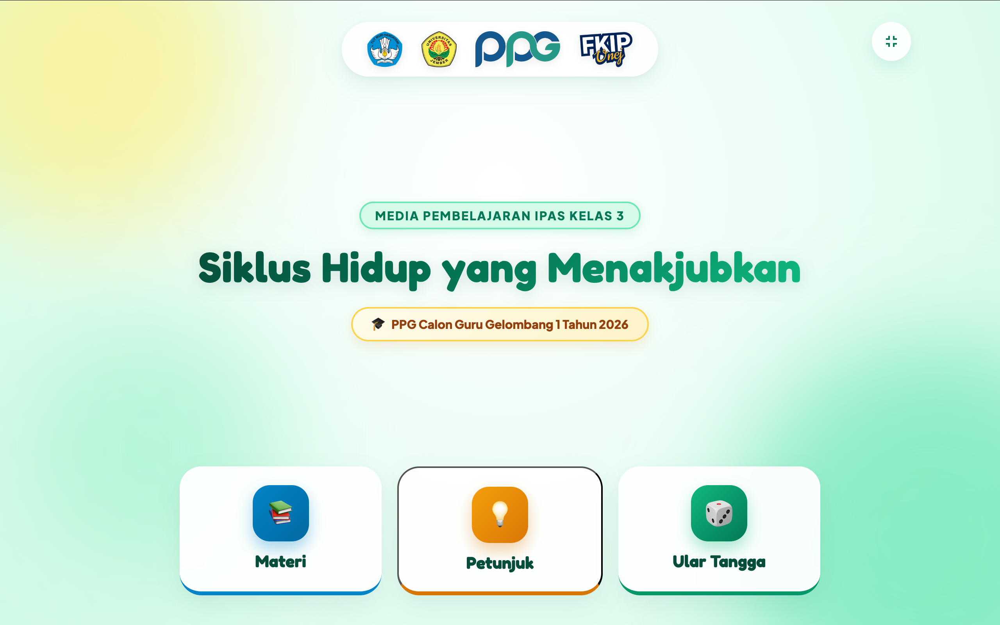
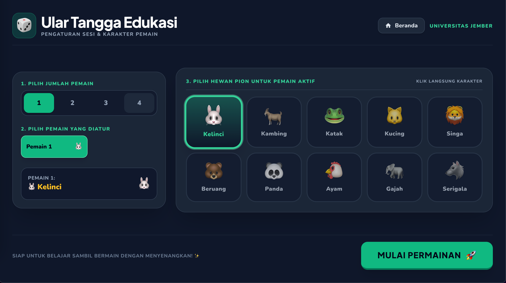
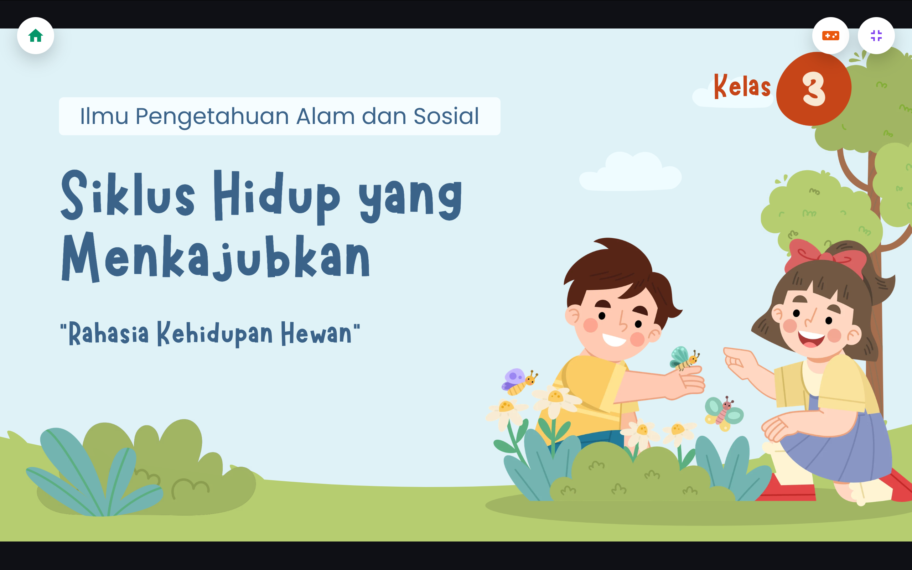
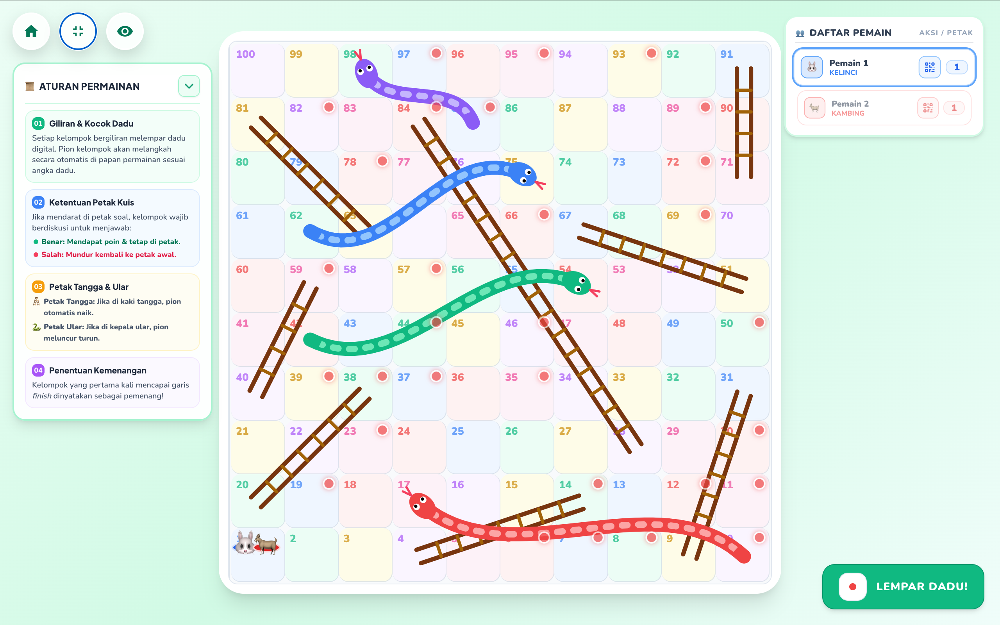

Tampilan & Akses Media
05 / 12
Prototipe Tampilan Aplikasi Ular Tangga Digital

1. Halaman Awal & QR

2. Pengaturan Kelompok

3. Modul Materi Interaktif

4. Papan Game & Kuis
Alamat Akses Media Resmi
Aplikasi dikembangkan secara responsif dan dapat diakses publik melalui tautan: https://ular-tangga-digital.vercel.app/
Pindai Aplikasi
Ular Tangga Digital